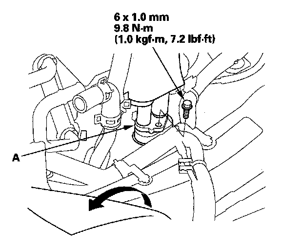

Rear HVAC Unit Removal/Installation
Rear HVAC Unit Removal/InstallationSRS components are located in this area. Review the SRS component locations and the precautions and procedures before doing repairs or service.
1. When the engine is cool, drain the engine coolant from the radiator.
2. Recover the refrigerant with a recovery/recycling/charging station.
3. Remove the center console.
4. Slide the hose clamps (A) back, then disconnect the rear inlet heater hose (B) and the rear outlet heater hose (C) from the rear heater core. Note the orientation of the hose.
Engine coolant will run out when the hoses are disconnected; drain it into a clean drip pan. Be sure not to let coolant spill on the electrical parts or the painted surfaces. If any coolant spills, rinse it off immediately.

5. Turn over the carpet. Remove the bolt, then disconnect the rear suction/receiver lines (A).
6. Remove the harness clips (A).
7. Disconnect the connectors (A) from the rear mode control motor, the rear air mix control motor, rear evaporator temperature sensor, rear power transistor, and rear blower motor, then remove the harness clips (B) and connector clip (C).
8. Remove the mounting bolts and rear HVAC unit (A). Plug or cap the lines immediately after disconnecting them to avoid moisture and dust contamination.
9. Install the rear heater core, and the rear evaporator core in the reverse order of removal.
10. Install the unit in the reverse order of removal, and note these items:
- Do not interchange the inlet and outlet heater hoses, and install the hose clamps securely.
- Refill the cooling system with engine coolant.
- Make sure that there is no coolant leakage.
- Make sure that there is no air leakage.
- If you're installing a new rear evaporator, add refrigerant oil (DENSO ND-OIL 8).
- Replace the O-rings with new ones at each fitting, and apply a thin coat of refrigerant oil before installing them. Be sure to use the correct O-rings for HFC-134a (R-134a) to avoid leakage.
- Immediately after using the oil, replace the cap on the container, and seal it to avoid moisture absorption.
- Do not spill the refrigerant oil on the vehicle; it may damage the paint; If the refrigerant oil contacts the paint, wash it off immediately.
- Charge the system.